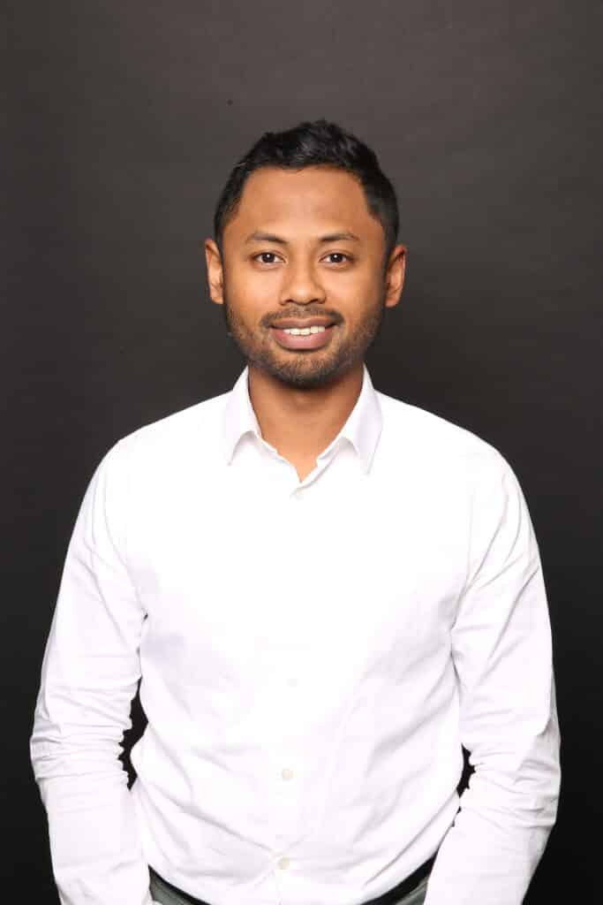
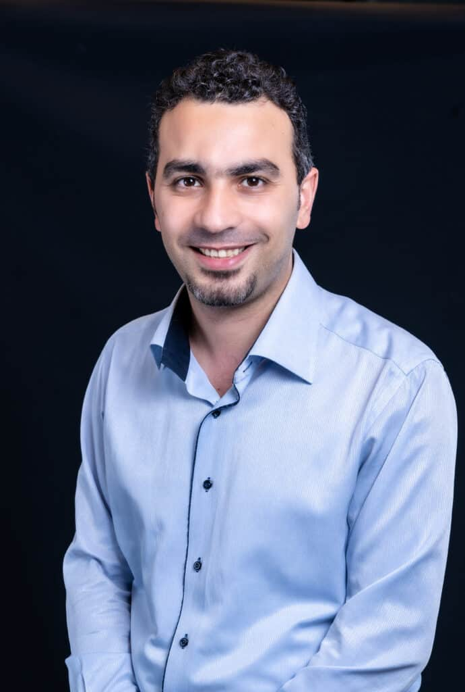
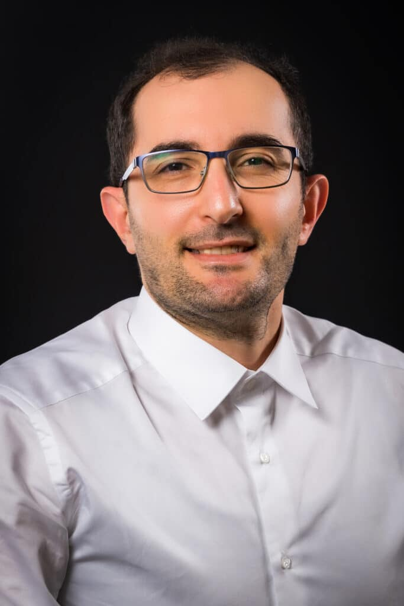
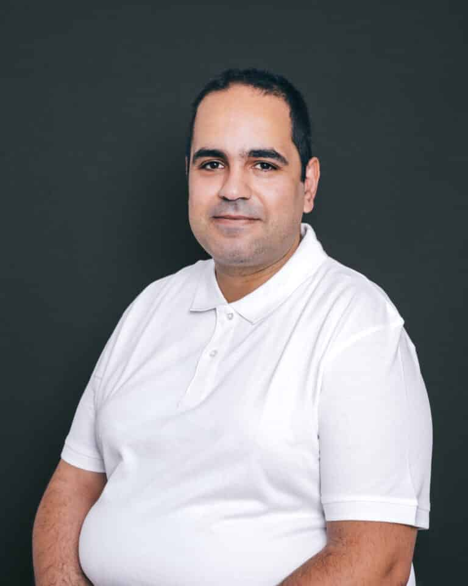
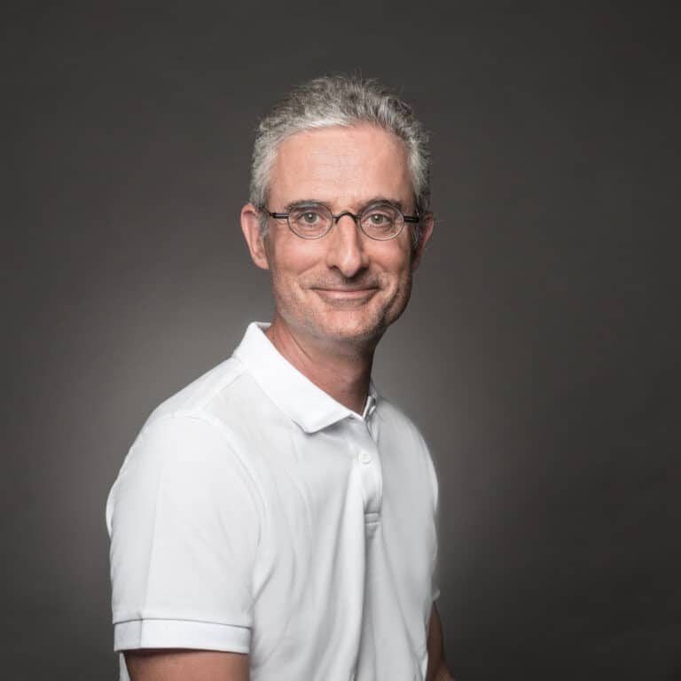
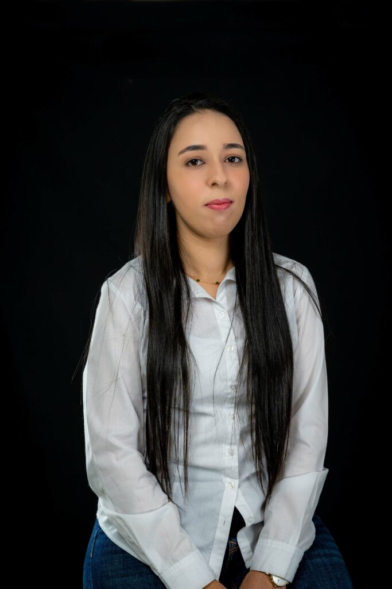
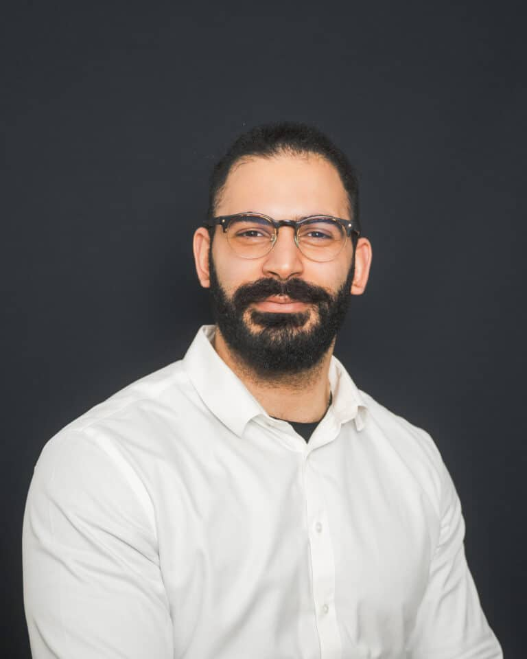
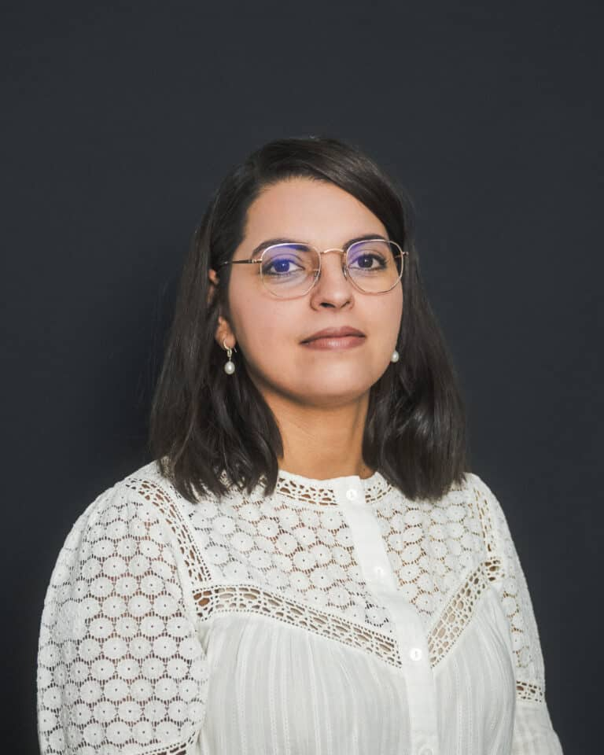
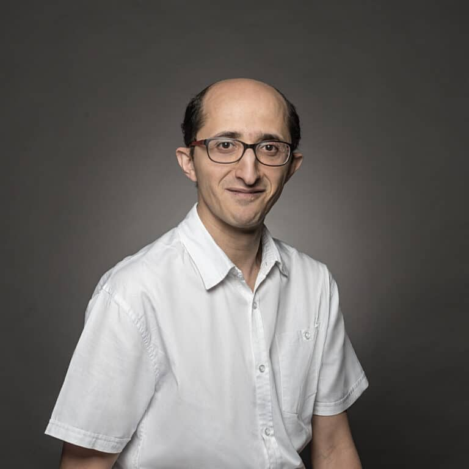
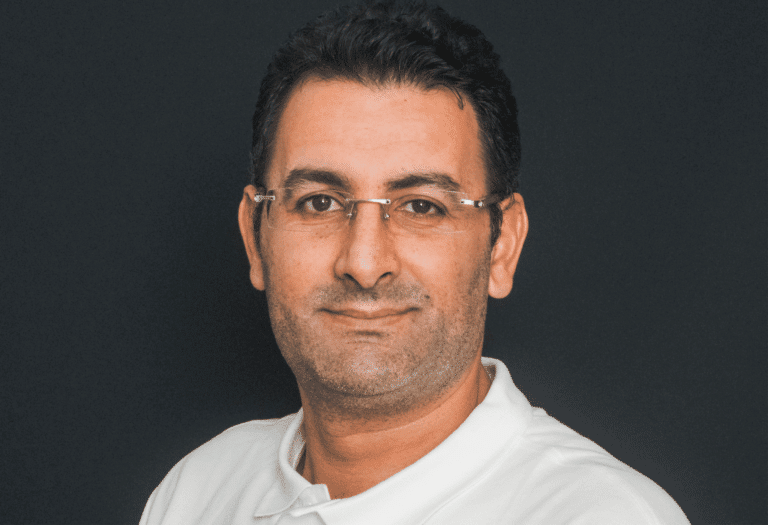

Notre Équipe
Les enseignants-chercheurs du département Informatique de l'EFREI Paris

Elle a obtenu son diplôme d'ingénieur d'État en informatique en 2006 à l'École Nationale Supérieure d'Informatique (ESI), avant d'obtenir en 2010 son Magistère. En 2021, elle obtient son doctorat et rejoint l'EFREI en 2022. Elle est aujourd'hui responsable du département Informatique.

Il a obtenu son doctorat en 2011 à l'Université Blaise Pascal (Clermont-Ferrand II). Durant sa thèse, il occupait un poste d'ingénieur hospitalier au CHU de Clermont-Ferrand et a participé à l'automatisation du circuit du médicament. Il a rejoint l'EFREI en 2018 et est responsable des programmes en Logiciel et Systèmes d'Information du Programme Grande École.

Rado RAKOTONARIVO a obtenu son Master en Mathématiques, Informatique et Statistiques Appliquées de l'Université d'Antananarivo (Madagascar) en 2016. Il a poursuivi son cursus par un doctorat en informatique au sein du Laboratoire d'Informatique de Paris Nord (LIPN) de l'Université Sorbonne Paris Nord. Il rejoint l'EFREI en 2022.

Il obtient son master en Mathématiques Appliquées et Statistiques à l'Université Grenoble Alpes, avant d'obtenir son doctorat en 2013 à l'Université Paris 13. Il rejoint l'EFREI en 2021 et est aujourd'hui manager en cycle M des pôles Data & IT, ainsi que responsable de la majeure « Data and Artificial Intelligence ».

Ingénieur en informatique diplômé de l'INSA Lyon, il réalise son doctorat à l'INSA Lyon en collaboration avec l'Université des Ryukyus au Japon. Il obtient ensuite son HDR à l'Université Paris-Saclay avant de rejoindre l'EFREI en 2010, où il dirige l'axe de recherche « Sécurité, Résilience et Confiance Numérique ».

Il prépare sa thèse à l'Université de Limoges au sein de l'équipe PICC (Protection de l'Information, Codage, Cryptographie) du laboratoire Xlim. Il obtient son doctorat en 2011 puis effectue un post-doctorat à Orange Labs. Il rejoint l'EFREI en 2020 et est responsable de la majeure « Cybersécurité et Cloud ».

Enseignant-chercheur spécialisé en Deep Learning et Intelligence Artificielle, il travaille sur le développement de nouvelles architectures de traitement, notamment les mécanismes d'attention. Il rejoint l'EFREI en 2023 et est responsable de la majeure « Big Data & Machine Learning ».

Il obtient un DEA en électronique à l'Université Paris XI, puis prépare sa thèse à l'ENSEA, obtenant son doctorat de l'Université Paris XI. Ses travaux de recherche portent sur le traitement d'images et la reconnaissance de formes. Il rejoint l'EFREI en 2011 et est responsable des programmes transverses.

Elle obtient son doctorat en informatique en 2018, rattachée au Centre de Recherche en Informatique de Lens (Université d'Artois) en cotutelle avec le Laboratoire de Recherche Opérationnelle de l'ISG Tunis. Elle rejoint l'EFREI en 2021 et est responsable du parcours Logiciels et Systèmes d'Information du Cycle Ingénieur en Apprentissage.

Khodor Hammoud a obtenu son doctorat en 2021 à l'Université de Paris-Cité. Il débute sa carrière d'enseignant à l'EFREI dès février 2020, pendant son doctorat. Il est aujourd'hui responsable de la majeure « Data Engineering ».

Après un Master Recherche spécialisé en réseaux et sécurité informatique obtenu en 2012, elle entame une thèse en 2013 sur l'agrégation de données sécurisée dans les réseaux de capteurs sans fil. Elle obtient son doctorat en 2016 et intègre l'EFREI en 2019 en tant qu'enseignante-chercheuse en Cybersécurité.

Yessin NEGGAZ a obtenu son doctorat en informatique à l'Université de Bordeaux en octobre 2016. Il occupe ensuite plusieurs postes d'enseignement et de recherche avant de rejoindre l'EFREI en 2018, où il est responsable de la majeure « Networks & Cloud Infrastructure ».

Diplômé ingénieur en informatique en 1998, il obtient un Master Spécialisé en bases de données avancées à l'Université de Versailles en 2001, puis son doctorat à l'Université Paris-Est Créteil en 2007. Il rejoint l'Esigetel en 2006, devenu l'EFREI suite à la fusion des deux établissements en 2016.

Ilyes Jenhani a obtenu son doctorat en Informatique en 2010 dans le cadre d'une thèse en cotutelle entre l'Université d'Artois (France) et l'Université de Tunis (Tunisie). Il a rejoint l'EFREI en 2024 et est responsable de la majeure « Software Engineering ».